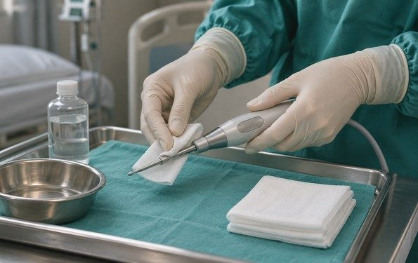
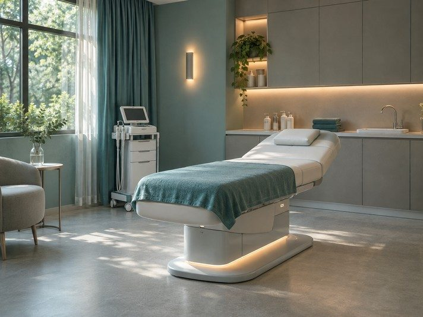

비타민 치료
비타민 치료 상담과 이용 정보를 안내합니다.
비타민 치료 상담과 이용 정보를 안내합니다.
상담 순서, 준비 자료와 방문 전 문의 사항을 안내합니다.
비타민 치료 상담
상담 예약, 자료 준비, 방문 일정과 비용 문의 방법을 확인해 주세요. 진료 관련 판단은 담당 의료진과 상담해 주세요.



첫 상담
현재 진료 중인 의료기관과 받고 있는 치료의 종류, 예정된 진료 날짜를 정리해 주세요. 이전에 받은 검사 자료가 있으면 날짜와 항목을 확인할 수 있게 준비해 주세요.
상담에서는 비타민 관련 문의 목적과 궁금한 점을 먼저 말씀해 주세요. 개인별 진료 내용과 필요한 확인 사항은 담당 의료진이 기록을 살펴본 뒤 안내합니다.
- 진료 기관과 담당자
- 예정된 진료 날짜
복용 정보
처방약, 일반 의약품, 영양 보충 제품을 이용하고 있다면 제품명과 복용 시점을 메모해 주세요. 목록이나 처방 내역을 준비하면 상담 중 확인할 수 있습니다.
이전에 비슷한 성분을 이용한 뒤 불편했던 경험이 있으면 발생 시기와 당시 상황을 알려 주세요. 정확히 기억나지 않는 항목은 추측하지 않아도 됩니다.
- 제품명과 이용 시점
- 이전 이용 뒤 불편했던 점
방문 전 준비
예약 날짜와 방문 가능 시간을 전화로 확인해 주세요. 검사 자료를 전달하는 방법이나 추가 서류가 필요한지는 접수 담당자에게 문의해 주세요.
진료 전에 식사나 약 복용 방법을 임의로 바꾸지 마세요. 별도의 준비가 필요하다고 안내받은 경우에는 안내한 의료진에게 일정과 방법을 다시 확인해 주세요.
- 예약 날짜와 도착 시간
- 요청받은 서류와 전달 방법
일정과 비용
상담 뒤 필요한 검사나 다음 방문 일정이 안내되면 날짜와 준비 사항을 기록해 주세요. 일정 변경이나 자료 추가 제출이 필요한 경우 대표 전화로 문의해 주세요.
비용과 적용 항목은 진료 내용에 따라 달라질 수 있습니다. 방문 전에 현재 기준과 결제 방법을 확인해 주세요.
- 다음 방문 날짜
- 현재 비용과 결제 방법
자주 묻는 질문
첫 방문 때 무엇을 준비하나요?
최근 검사 결과와 복용 중인 처방약·보충제 목록을 준비해 주세요. 자료가 없으면 방문 전에 필요한 항목을 접수처에 확인할 수 있습니다.
상담에서 무엇을 확인하나요?
현재 진료 내용과 투여 경험, 필요한 검사, 진행 여부를 담당 의료진과 확인합니다.
검사 전 금식해야 하나요?
검사나 투여 전 식사 지침이 있는지 예약 때 확인해 주세요. 별도 안내 없이 금식하지 마세요.
투여 시간은 얼마나 걸리나요?
준비와 대기 시간을 포함한 일정은 진료 내용과 당일 운영에 따라 안내받습니다.
주사 전에 혈관을 확인하나요?
담당자가 투여 경로와 주사 부위를 확인합니다. 과거 주사 부위 불편이 있으면 먼저 알려 주세요.
복용약을 바꿔야 하나요?
복용약은 임의로 중단하거나 변경하지 말고 확인이 필요한 내용을 처방 의료진에게 문의해 주세요.
투여 중 불편하면 어떻게 하나요?
주사 부위나 몸 상태에 변화가 생기면 즉시 담당자에게 알려 안내를 받으세요.
보호자와 함께 가도 되나요?
동행 가능 여부와 대기 장소는 예약할 때 병원에 확인해 주세요.
비용과 보험 적용은 어디서 확인하나요?
치료를 결정하기 전에 항목별 비용과 보험 적용 여부를 병원에 문의해 주세요.
예약을 바꾸려면 어떻게 하나요?
대표 전화로 연락해 가능한 날짜를 확인하고 바뀐 일정을 다시 확인해 주세요.
혈관과 투여 준비
정맥 투여가 계획된 경우에는 담당자가 팔의 혈관 상태와 사용할 위치를 확인합니다. 이전 채혈이나 주사에서 불편했던 점, 혈관 확보가 어려웠던 경험을 시작 전에 알려 주세요.
투여 시간 확인
투여에 걸리는 시간과 대기 장소는 처방 내용과 당일 일정에 따라 안내받아 주세요. 종료 예정 시각을 알아야 한다면 예약 담당자에게 먼저 문의해 주세요.
투여 중 전달할 점
투여 중 통증이나 붓기, 몸 상태 변화가 있으면 즉시 담당자에게 알려 주세요. 수액 속도나 연결 부위를 스스로 조정하지 말고 직원의 안내를 기다려 주세요.
식사와 수분 문의
방문 전 식사나 물 섭취에 별도 지침이 있는지 예약 과정에서 확인해 주세요. 안내를 받지 못했다면 평소와 다르게 식사량이나 복용 방법을 바꾸기 전에 병원에 문의해 주세요.
투여 종료 뒤 확인
투여가 끝난 뒤 귀가 시점과 다음 진료 날짜, 연락 방법을 확인해 주세요. 주사 부위나 몸 상태에 변화가 있으면 시작 시각과 함께 기록해 병원에 문의해 주세요.
투여 장소와 시간 확인
예약할 때 투여 장소, 접수 시각, 예상되는 대기 시간을 확인해 주세요. 진료와 투여가 같은 날 예정되어 있으면 두 일정의 순서와 준비 방법을 담당자에게 물어봐 주세요. 안내받은 시간이 바뀌면 새 방문 시각을 메모해 접수 때 확인할 수 있도록 준비해 주세요.
정맥 투여 전 확인
정맥 투여가 계획되면 담당자가 혈관 상태와 투여 위치를 살펴봅니다. 최근 채혈이나 주사에서 통증, 멍, 붓기, 혈관 확보의 어려움이 있었으면 발생한 시점과 부위를 설명해 주세요. 피부가 민감하거나 주사 자리에 상처가 있는 경우에도 시작 전에 직원에게 알려 주세요.
투여 중 의사 전달
투여를 시작하기 전에 불편할 때 직원을 부르는 방법을 확인해 주세요. 주사 부위가 당기거나 붓고, 몸 상태가 달라지는 경우에는 증상과 시작 시각을 바로 알려 주세요. 연결 부위나 주입 속도는 직접 조정하지 말고 담당자가 상태를 확인하도록 요청해 주세요.
식사와 복용 관련 질문
방문 전 식사와 수분 섭취, 복용 약에 관한 지침이 필요한지 예약 과정에서 확인해 주세요. 별도의 지침을 받지 않았다면 평소 식사나 처방된 약의 이용 방법을 임의로 바꾸지 말고 병원에 문의해 주세요. 새로 시작하거나 중단한 제품이 있으면 제품명과 날짜를 함께 알려 주세요.